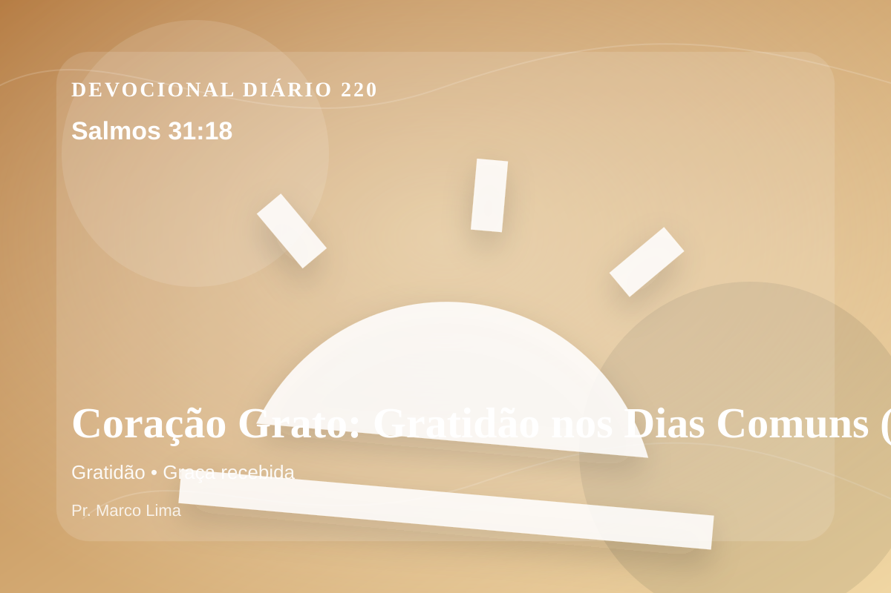

Coração Grato: Gratidão nos Dias Comuns (Salmos 31:18)
Emudeçam os lábios mentirosos, que falam coisas duras contra o justo, com arrogância e desprezo.
Pensamento
Hoje, a ênfase está em como esta Palavra alcança decisões pequenas, silenciosas e reais. Este devocional começa com uma pergunta simples: que área da sua vida precisa ser iluminada por Salmos 31:18 hoje?
Salmos 31:18 chama o coração a ouvir Deus com reverência e responder com fé prática. A Palavra não foi dada para enfeitar pensamentos religiosos, mas para conduzir pessoas reais ao Senhor.
O tema de gratidão precisa ser recebido com simplicidade e seriedade. O ponto central não é apenas saber mais, mas viver de modo mais rendido. A gratidão bíblica desloca a atenção da falta para a fidelidade de Deus. Ela não nega a dor, mas ensina a reconhecer a presença e a bondade do Senhor mesmo em dias difíceis.
Examine se existe orgulho, comparação, medo, culpa escondida ou autossuficiência impedindo sua resposta ao Senhor. A graça não nos humilha para destruir; ela nos quebra para reconstruir em Cristo.
Arrependimento não é apenas sentir peso na consciência; é voltar-se para Deus, abandonar o caminho que entristece o Senhor e confiar que a graça de Cristo é suficiente para perdoar e transformar.
Este é o evangelho que sustenta toda aplicação: Jesus Cristo morreu pelos pecadores, ressuscitou em vitória e chama cada pessoa a responder com fé, arrependimento e uma vida rendida ao Seu senhorio.
Cristo não veio apenas melhorar comportamentos, mas salvar pessoas. Na cruz, Ele trata a culpa; na ressurreição, Ele abre caminho para uma nova vida.
Leve esta Palavra para o ponto mais concreto do seu dia. O fruto da meditação aparecerá quando Cristo governar uma reação, uma prioridade ou uma escolha.
Para Praticar Hoje
- Leia Salmos 31:18 lentamente e destaque uma palavra ou expressão central do texto.
- Confesse a Deus um pecado, resistência ou frieza espiritual que esta Palavra revelou.
- Declare sua fé em Jesus Cristo e pratique hoje uma atitude concreta de arrependimento e obediência.
Oração
Senhor, eu quero viver com um coração grato. Salmos 31:18 me lembra de todos os benefícios do Senhor que perdoa, sara e sustenta. Que a gratidão seja o tom da minha vida. Guarda-me perto de Jesus.
{kind=link}